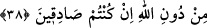

de ebedî olduğundan kendisine yok etme ve sâbit bırakma ârız olmayan, Kitab’ta
yazılmış, takdir edilmiş şeylerin topluca açıklamasıdır. Nitekim Cenab-ı Hak: “Allah
dilediğini mahveder, dilediğini ise sâbit bırakır.” (er-Ra‘d, 13/39) buyurmuştur.
Burada mahlûk olan ve değişikliği kabul eden Levh-i Mahfûz’daki mahvetme ve sâbit
bırakma kastedilmektedir. “Kitâb’ın aslı ise O’nun katındadır.” (er-Ra‘d, 13/39)
Yâni değişmez asıl, O’nun katındadır. Bu ise Allah’ın kadîm zâtı ile kâim bulunan
ilmidir.
“O’nda asla şüphe yoktur.” Yani o, kendisinde şüphe bulunmayandır. Yâni huccetinin
zuhûru ve delâletinin âşikâre olması o derecedir ki onu azıcık düşünen ve tefekkür eden
kimse şüpheden kurtulur ve onda şüphe etmeye imkan olmadığını bilir.
“Alemlerin Rabbi tarafındandır.” Yani Kur’an Rasûlullah (s.a.)’e Allah Teâlâ
tarafından inen bir vahydir.
38. Yoksa “O’nu uydurdu” mu diyorlar. De ki: “Eğer doğru iseniz, haydi Allah’tan
başka çağırabildiklerinizi de çağırın da onun benzeri bir sûre getirin.”
“Yoksa “O’nu uydurdu” mu diyorlar.” Yani, “Yoksa Mekke kâfirleri “O’nu
Muhammed uydurdu” mu diyorlar?” Buradaki soru, bu iddiayı kötülemek ve uzak
bulmak için getirilmiştir. Zemahşerî, bu sorunun bir delil ortaya koyup muhâtabı
susturmak için olabileceğini söylemiştir.
Onlara “de ki: “Eğer” durum sizin dediğiniz gibiyse, Kur’ân’ı benim uydurduğum
iddiâsında “doğru iseniz, haydi Allah’tan başka çağırabildiklerinizi de çağırın da”
belâgat, nazım güzelliği ve mânâ gücü bakımından “onun benzeri bir sûre” uydurarak
“getirin.” Çünkü siz de Arapça konuşma ve fesâhat konusunda benim gibisiniz.
Buradaki emir, âciz bırakma ve taşlama kabilinden bir emirdir.
Kur’ân’a karşı durma konusunda bir ikinizin aklı kâfi gelmiyorsa, bir sûrenin
benzerini getirmenize yardım etmeleri için “Allah’tan başka çağırabildiğinizi de
çağırın” Çünkü bir mahlûkun uydurduğu bir şeyi öteki de uydurabilir. “her ilim
sahibinin üstünde bir bilen vardır.” (Yûsuf, 12/76) İşte toplu olarak da tek tek de
Kur’an’ın karşısında durmaktan âciz kaldığınızı anladığınıza göre Kur’ân’ın nazmının
da indirilişinin de ancak Allah Teâlâ tarafından olduğu anlaşılmış olur.
Bilesin ki Kur’ân’ın i‘câzı, yani başkalarını âciz bırakması, insanları kendisine karşı
koyma kudretinden alıkoyacak şekilde fesâhat ve belâgatin zirvesinde olmasıdır. Öyle
ki, insanları karşı koyma gücünden âciz bırakır. Yoksa bazılarının vehmettiği gibi
muktedir oldukları halde Allah Peygamberine bir lütuf ve ikram olarak belâgatçıların